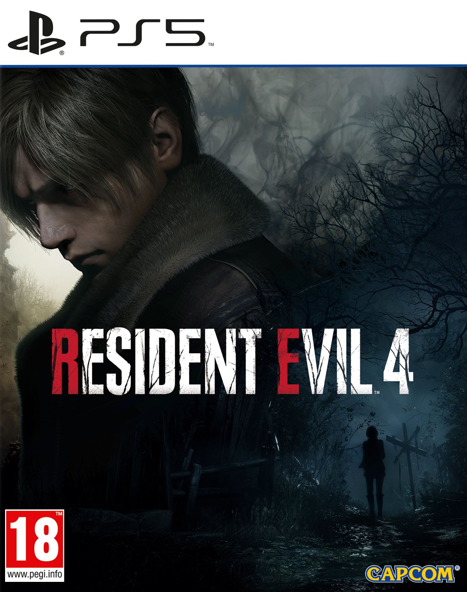

GTA VI
Grand Theft Auto VI is an upcoming action-adventure game in development by Rockstar Games. It is due to be the eighth main Grand Theft Auto game, following Grand Theft Auto V (2013), and the sixteenth entry overall. Set within the fictional open world state of Leonida—based on Florida—and its Miami-inspired Vice City, the story is expected to follow the criminal duo of Lucia and her male partner.[a]
Following years of speculation and anticipation, Rockstar confirmed in February 2022 that the game was in development. That September, footage from unfinished versions was leaked online in what journalists described as one of the biggest leaks in the history of the video game industry. The game was formally revealed in December 2023 and is scheduled to be released in late 2025 for the PlayStation 5 and Xbox Series X/S.
Read more...
Call Of Duty: Moder Warfare 3
Call of Duty: Modern Warfare 3 is a 2011 first-person shooter video game, jointly developed by Infinity Ward and Sledgehammer Games and published by Activision. The game was released worldwide in November 8 2011 for Microsoft Windows, the Xbox 360, PlayStation 3, Wii, and OS X.[1] It is the sequel to Call of Duty: Modern Warfare 2 (2009), serving as the third and final installment in the original Modern Warfare trilogy and the eighth Call of Duty installment overall. A separate version for the Nintendo DS was developed by n-Space, while Treyarch developed the game's Wii port. In Japan, Square Enix published the game with a separate subtitled and dubbed version.[2]
The game's campaign follows Modern Warfare 2 and begins right after the events of its final mission. Similar to Modern Warfare 2, it is centered around Task Force 141, which contains Captain Price, Soap MacTavish, and a newly introduced playable character, Yuri. Alongside the Delta Force and Special Air Service, they hunt Vladimir Makarov (the main antagonist of the trilogy), a Russian terrorist who leads the Russian Ultranationalist party. He led several terror attacks across Europe, triggering a large-scale war between the Ultranationalists and friendly forces. For the game's multiplayer mode, new mode types and killstreak choices were brought in. Improvements were also made to the mode that solved issues that appeared in Modern Warfare 2.
Read more...

Alan Wake 2
Alan Wake 2 is a 2023 survival horror video game developed by Remedy Entertainment and published by Epic Games Publishing. The sequel to Alan Wake (2010), the story follows best-selling novelist Alan Wake, who has been trapped in an alternate dimension for 13 years, as he attempts to escape by writing a horror story involving an FBI Special Agent named Saga Anderson.
Alan Wake 2 was released for PlayStation 5, Windows, and Xbox Series X/S on 27 October 2023. The game's development budget reportedly stands at €50 million, making it one of the most expensive games to develop and one of the most expensive cultural products from Finland. Alan Wake 2 received positive reviews from critics, praising its gameplay, story, graphics, and atmosphere,[not verified in body] and the game was nominated for multiple Game of the Year awards. It sold over 1.3 million units by February 2024, making it Remedy's fastest-selling game. A downloadable content (DLC) expansion titled Night Springs was released on 8 June 2024, while a second expansion titled The Lake House is scheduled for release in October 2024.
Read more....

Days Gode
Days Gone is a 2019 action-adventure video game developed by Bend Studio and published by Sony Interactive Entertainment. The game was released for the PlayStation 4 in April 2019. A Windows port was released in May 2021.
Days Gone is set in post-apocalyptic Oregon two years after the start of a pandemic that turned a portion of humanity into vicious zombie-like creatures. Former outlaw-turned-drifter Deacon St. John discovers his wife Sarah, having been assumed dead, may still be alive and goes on a quest to find her. The game is played from a third-person perspective in which the player can explore an open world environment. Players can use firearms, melee weapons, and improvised weapons, and can use stealth to defend themselves against hostile humans and cannibalistic creatures known as Freakers. A major game mechanic is Deacon's motorcycle, which is used as the player character's main mode of transportation.
Days Gone was Bend Studio's first open-world project, its first original property since Syphon Filter (1999), and its first development project for home consoles after spending decades working on spinoff games for handheld consoles. The game's development took approximately six years; Bend Studio expanded nearly three-fold to support it. Major sources of inspiration for Days Gone were World War Z, The Walking Dead and Sons of Anarchy. The game was unveiled at E3 2016; its release was originally planned for 2018 but was delayed several times.
Upon release, Days Gone received mixed reviews from critics, who criticized the game's mission design and technical issues but praised the graphics, artificial intelligence, and Sam Witwer's performance as Deacon, while the story received a mixed reception. The game had sold 7.32 million units by February 2022. In 2021, it was reported that the development team had unsuccessfully pitched a sequel to Sony.
In 2022, it was reported that a film adaptation of the game is in the works.
Read More....

Resident Evil 4 remake
Resident Evil 4 is a 2023 survival horror game developed and published by Capcom. A remake of the 2005 game Resident Evil 4, players control the US agent Leon S. Kennedy, who must save Ashley Graham, the daughter of the United States president, from the mysterious Los Illuminados cult. The remake has an updated plot, new visuals, characters, cast, and altered gameplay.
Resident Evil 4 was released for PlayStation 4, PlayStation 5, Windows, and Xbox Series X/S on March 24, 2023. Versions for iOS, and macOS were released on December 20, 2023. The game received critical acclaim and was nominated for the Golden Joystick Award for Ultimate Game of the Year and The Game Award for Game of the Year. The game had sold 7 million units by March 2024, making it the fastest-selling installment in the series.
Read more...
